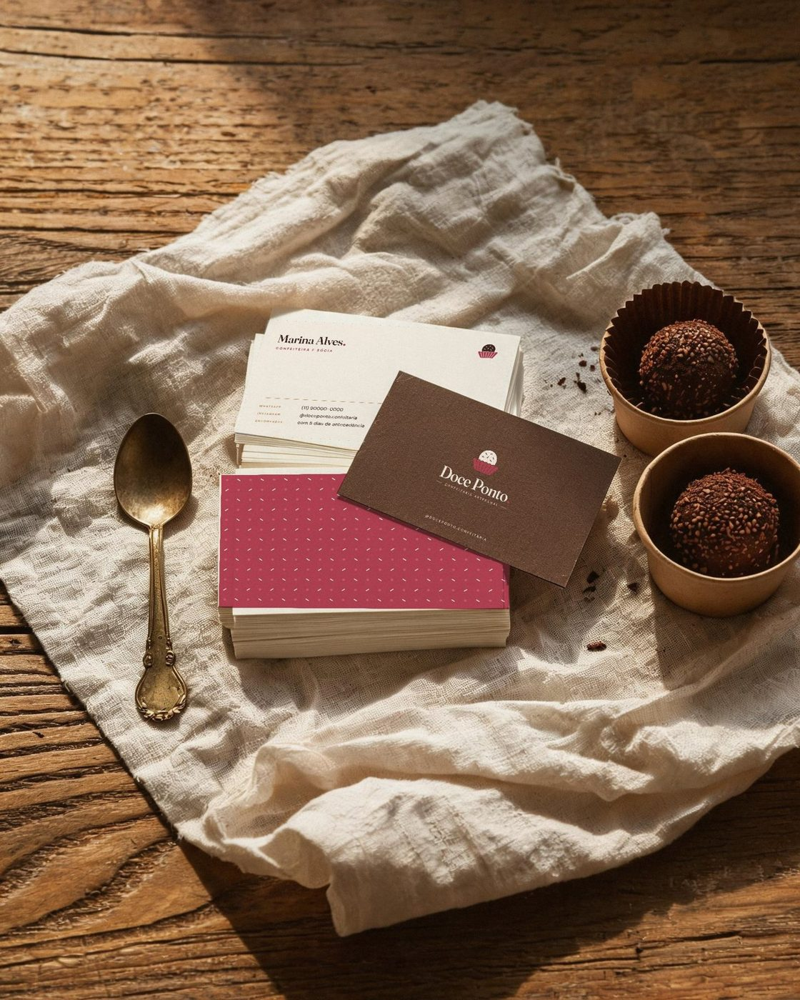
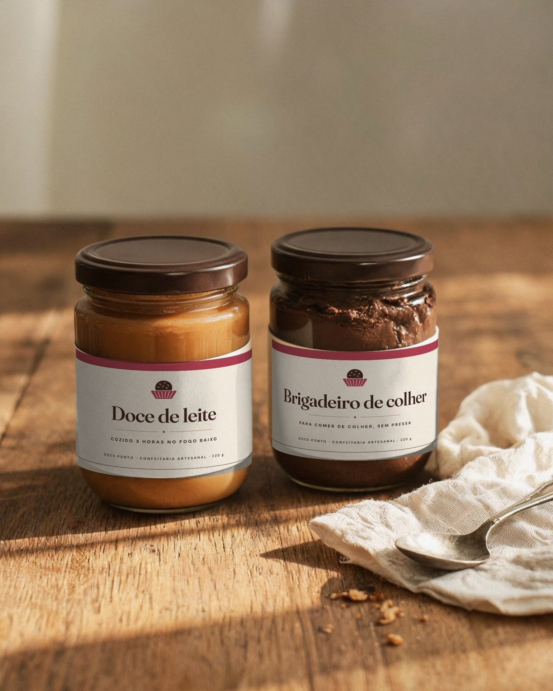
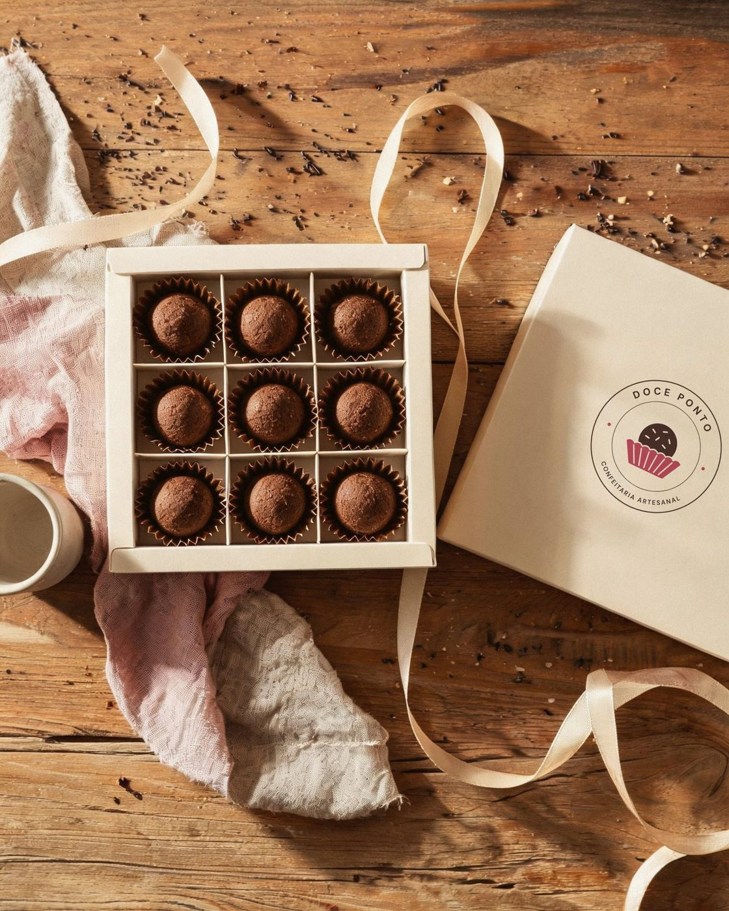
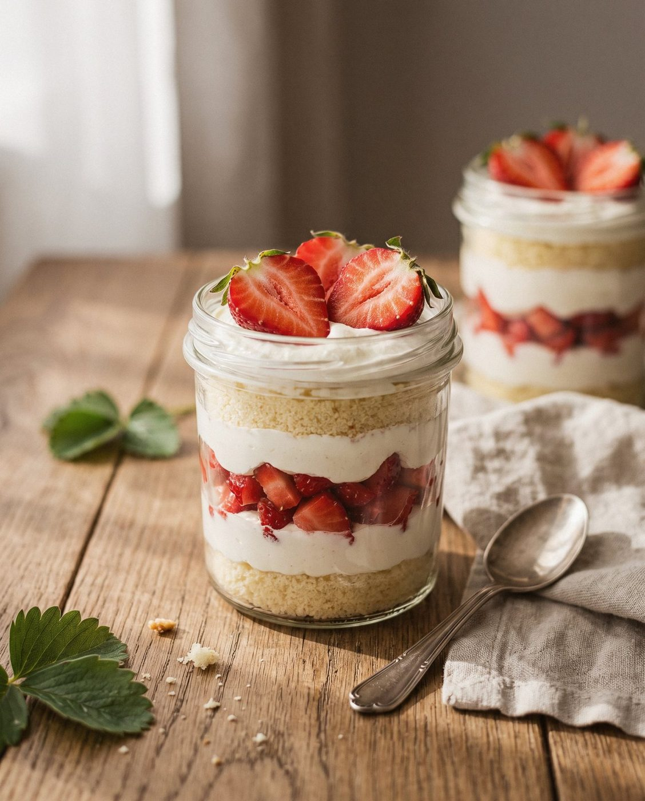
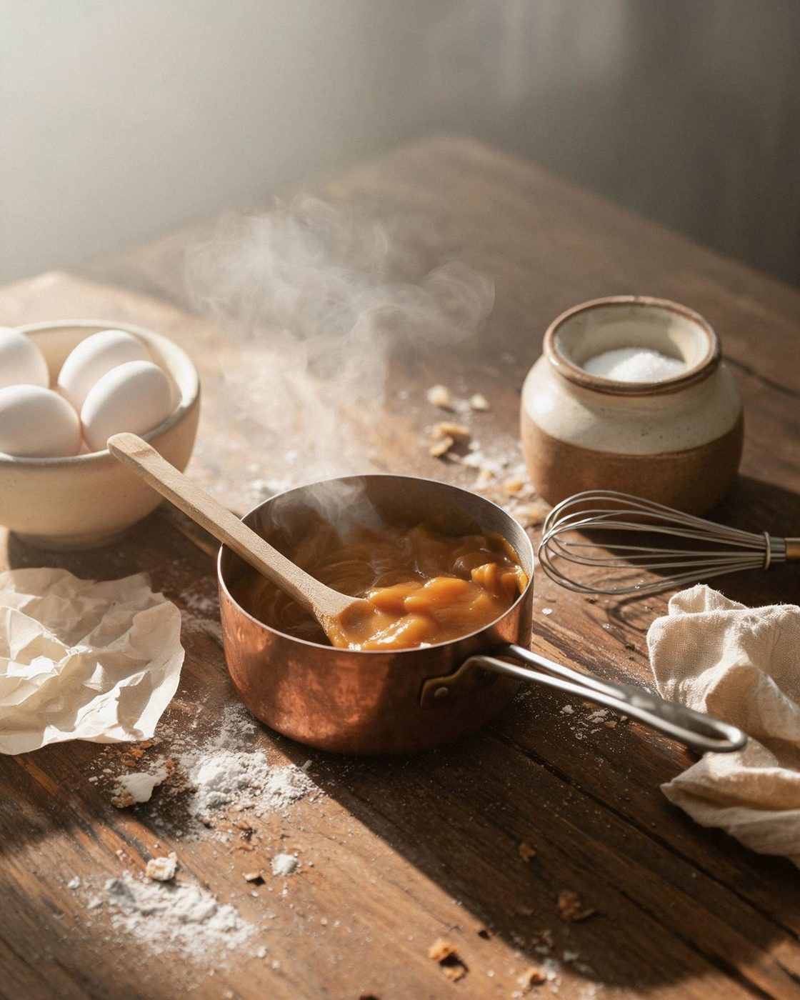
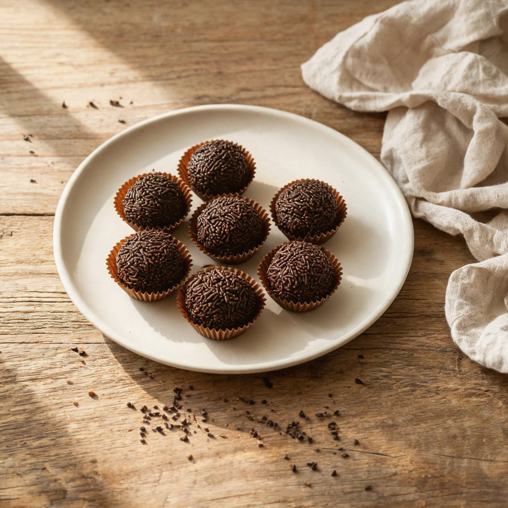
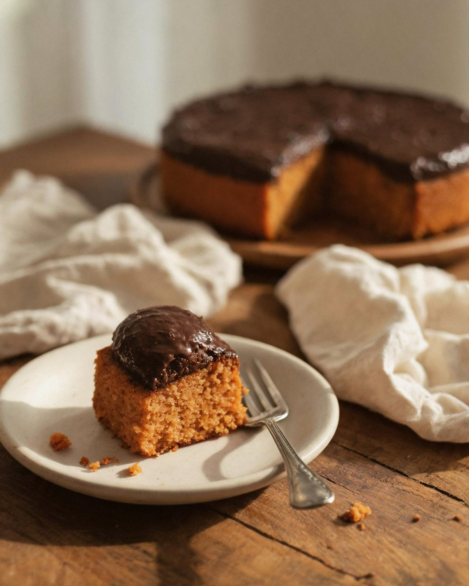
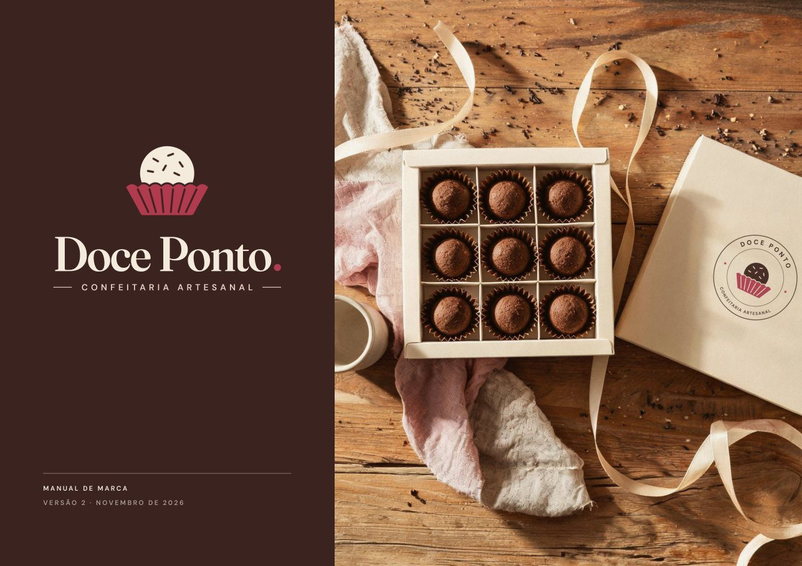
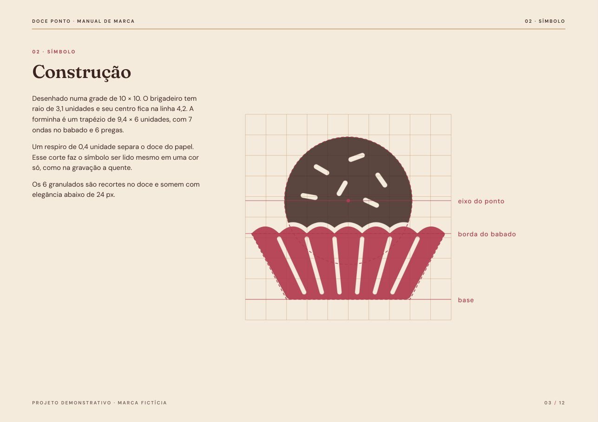
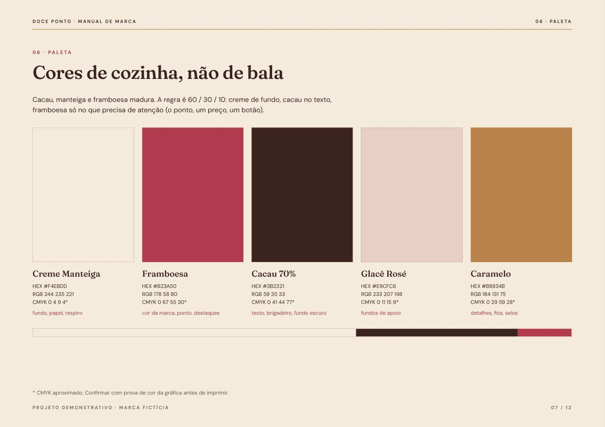

01 · Conceito
O ponto certo do brigadeiro
Na confeitaria, "ponto" é quando a massa desgruda da panela e o doce fica pronto. A marca inteira saiu dessa ideia.
O símbolo é o brigadeiro na forminha: um círculo de cacau sobre o papel plissado. Qualquer brasileiro reconhece na hora, e ele continua legível com 16 px, no perfil do Instagram.
O nome sai em Fraunces redesenhada, com o espaço entre as letras ajustado à mão nos pares Do, Po e nt. O ponto final em framboesa fecha a assinatura, como quem diz "está pronto". Saiu o rosa chiclete da primeira versão e entrou uma paleta de cozinha: cacau, manteiga e framboesa madura.
02 · Logo
Quatro formas, uma marca
Cada versão tem um uso. Todas em SVG com texto em curvas, prontas para a gráfica.


03 · Cores
Cores de cozinha, não de bala
Regra de 60 / 30 / 10: creme de fundo, cacau no texto e framboesa só no que precisa de atenção. Clique numa cor para copiar o HEX.
04 · Tipografia
Duas famílias, gratuitas
Fraunces nos títulos e nomes de produto, DM Sans no texto e nos preços. As duas são do Google Fonts: o cliente não paga licença.
Fraunces
Peso 560, suavidade 30. Itálico só para uma palavra de ênfase por título.
Bolo de pote de morango
Título · Fraunces 560
DM Sans
400 para ler, 700 em caixa alta espaçada para chapéus e rótulos.
Pão de ló de baunilha, creme de ninho e morango picado na hora.
Texto · DM Sans 400
05 · Aplicações
A marca na mesa
Cartão, etiqueta de pote, sacola e caixa aplicados sobre fotos, com a luz e a perspectiva da cena. Assim o cliente aprova antes de pagar a gráfica.




06 · Fotografia
Uma luz, uma mesa
A direção de foto entra no manual para o feed e o cardápio não parecerem de cinco marcas diferentes.




Luz de janela pela esquerda, sombra longa e macia.
Mesa de carvalho, linho cru, cerâmica fosca.
Lente 50 mm, fundo desfocado, migalha de verdade.
Sem texto na foto. O texto entra depois, na peça.
As fotos desta página foram geradas por IA para o projeto demonstrativo. Num projeto real, são fotos do produto do cliente, feitas com esta direção.
07 · Manual de marca
Tudo num PDF de 12 páginas
Para a dona da confeitaria, a gráfica ou o próximo designer usarem a marca sem errar.



- 01Conceito e símbolo em grade
- 02Assinaturas, proteção e tamanho mínimo
- 03Versões de cor e usos proibidos
- 04Paleta, tipografia e padrão
- 05Direção de fotografia
- 06Papelaria e embalagem